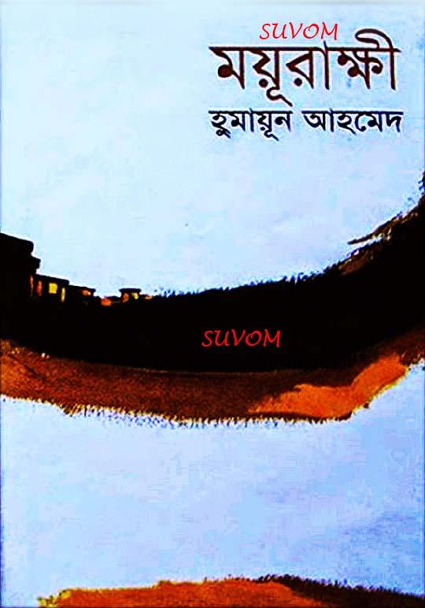

একটি
শুভম ক্রিয়েশন
হিমু সমগ্র
হুমায়ূন আহমেদ
অনন্যা
৩৮/২ বাংলাবাজার, ঢাকা-১১০০
প্রকাশক: মনিরুল হক
অনন্যা
বাংলাবাজার ঢাকা ৩৮/২
প্রথম প্রকাশ ডিসেম্বর ২০০৬
দ্বিতীয় সংস্করণ ফেব্রুয়ারি ২০০৮
তৃতীয় সংস্করণএপ্রিল ২০১০
চতুর্থ সংস্করণফেব্রুয়ারি ২০১২
স্বত্ব লেখক
প্রচ্ছদ ও অলংকরণধ্রুব এষ
আলোকচিত্রগোলাম মুস্তাফা, পলাশ খান
কম্পোজ তন্বী কম্পিউটার্স
৩৮/৪ বাংলাবাজার, ঢাকা-১১০০
মুদ্রণ পাণিনি প্রিন্টার্স
১৪/১ তনুগঞ্জ লেন, সুত্রাপুর, ঢাকা
দাম আটশত টাকা
ISBN 984 412 611 8
Hirmu Samagra by Humayun Ahmed,
Published by : Monirul Hoque, Ananya 38/2 Banglabazar, Dhaka-1100
Forth Edition : February 1012, Cover Designe: Dhrubo Esh
Price : 800.00 Take Only.
U.K. Distributor C. Sangeeta Limited
22, Brick Lane, London
U.S.A Distributor D. Muktadhara
37-69, 74 St. 2nd floor, Jackson Heights, N.Y 11372
Canada Distributor D. Anyamela
300 Danforth Ave., Toronto (1st floor), Suite-202
Canada Distributor D ATN Mega Store
উৎসর্গ
এ-দেশের
হিমুদের জন্য
উপহার নগণ্য।
ভূমিকা
হিমুকে নিয়ে কতগুলি বই লিখেছি নিজেও জানি না। মন মেজাজ খারাপ থাকলেই হিমু লিখতে বসি । মন ঠিক হয়ে যায়। বেশি লেখার ফল সব সময় শুভ হয় না। আমার ক্ষেত্রেও হয় নি। অনেক জায়গাতেই ল্যাজে গোবরে করে ফেলেছি। হিমুর পাঞ্জাবির পকেট থাকে না অথচ একটা বই-এ লিখেছি সে পকেট থেকে টাকা বের করল। হিমুর মাজেদা খালা এক বই-এ হয়ে গেলো মাজেদা ফুপু। তবে হিমু যে ঠিক আছে তাতেই আমি খুশি । হিমু ঠিক আছে, হিমুর জগৎ ঠিক আছে। তার বয়স বাড়ছে না। সে বদলাচ্ছে না। এই আনন্দ সংবাদ দিয়ে ভূমিকা শেষ করছি।
সব হিমুকে বন্দি করে যে প্রকাশক বিশাল হিমু সমগ্র বের করলেন তাকে (মনিরুল হক, অনন্যা) ধন্যবাদ।
সূচিপত্র
ময়ূরাক্ষী / ১০
দরজার ওপাশে / ১০১
হিমু / ২৩২
পারাপার / ৩৩৯
এবং হিমু / ৪৫২
হিমুর হাতে কয়েকটি নীলপদ্ম / ৫৫৬
হিমুর দ্বিতীয় প্রহর / ৭০০
হিমুর রূপালী রাত্রি/ ৮৬৯
একজন হিমু কয়েকটি ঝিঝিপোকা / ১০৩৬
তোমাদের এই নগরে / ১১৫০
চলে যায় বসন্তের দিন / ১২৬১
সে আসে ধীরে / ১৩৭৬
ময়ূরাক্ষী
হুমায়ূন আহমেদ

১
এ্যাই ছেলে, এ্যাই ।
আমি বিরক্ত হয়ে তাকালাম। আমার মুখভরতি দাড়িগোঁফ । গায়ে চকচকে হলুদ পাঞ্জাবি। পর পর তিনটা পান খেয়েছি বলে ঠোঁট এবং দাত লাল হয়ে আছে। হাতে সিগারেট । আমাকে ‘এ্যাই ছেলে’ বলে ডাকার কোনোই কারণ নেই। যিনি ডাকছেন তিনি মধ্যবয়স্কা একজন মহিলা । চোখে সোনালি ফ্রেমের চশমা। তার সঙ্গে আমার একটি ব্যাপারে মিল আছে। তিনিও পান খাচ্ছেন। আমি বললাম, আমাকে কিছু বলছেন?
তোমার নাম কি টুটুল ?
আমি জবাব না দিয়ে কিছুক্ষণ চুপচাপ দাঁড়িয়ে রইলাম। এই মহিলাকে আমি আগে কখনো দেখিনি। অথচ তিনি এমন আগ্রহ নিয়ে তাকিয়ে আছেন। মনে হচ্ছে আমি যদি বলি – “হ্যাঁ আমার নাম টুটুল” তাহলে ছুটে এসে আমার হাত ধরবেন।
কথা বলছ না কেন? তোমার নাম কি টুটুল?
আমি একটু হাসলাম ।
হাসলাম এই আশায় যেন ধরতে পারেন আমি টুটুল না। হাসিতে খুব সহজেই মানুষকে চেনা যায়। সব মানুষ ভঙ্গিতে কাঁদে কিন্তু হাসার সময় একেক জন একেক রকম করে হাসে। আমার হাসি নিশ্চয়ই ঐ টুটুলের হাসির মতো না।
আশ্চর্যের ব্যাপার, এই ভদ্রমহিলা আমার হাসিতে আরো প্রতারিত হলেন । চোখমুখ উজ্জ্বল করে বললেন, ওমা, টুটুলই তো!
ভাবছিলাম তিনি আমার দিকে ছুটে আসবেন। তা না করে ছুটে গেলেন রাস্তার ওপাশে পার্ক-করা গাড়ির দিকে। আমি শুনলাম তিনি বলছেন, ‘তোকে বলিনি ও টুটুল। তুই তো বিশ্বাস করলি না। ওর হাঁটা দেখেই আমি ধরে ফেলেছি। কেমন দুলে দুলে হাঁটছে।
ড্রাইভার গাড়ি ঘুরিয়ে রাস্তার এপাশে নিয়ে এল। ড্রাইভারের পাশের সিটটা খালি । ভদ্রমহিলা আমার দিকে তাকিয়ে বললেন, টুটুল, উঠে আয় । আমি উঠে পড়লাম।
বাইরে চৈত্র মাসের ঝা-ঝা রোদ। আমাকে যেতে হবে ফার্মগেট। বাসে উঠলেই মানুষের গায়ের গন্ধে আনার বমি আসে। কাজেই যেতে হবে হেঁটে হেঁটে। খানিকটা লিফট পাওয়া গেলে মন্দ কী! আমি তো জোর করে গাড়িতে চেপে বসি নি! তাছাড়া
আমার চিন্তার সূতা কেটে গেল। ভদ্রমহিলার পাশে বসে থাকা মেয়েটি বলল, মা, এ টুটুল ভাই নয়।
আমি ঘাড় ঘুরিয়ে মেয়েটির দিকে তাকিয়ে ঠিক আগের ভঙ্গিতে হাসলাম । যে হাসি দিয়ে মেয়ের মাকে প্রতারিত করেছিলাম, সেই হাসিতে মেয়েটিকে প্রতারিত করার চেষ্টা। মেয়ে প্রতারিত হলো না। এই যুগের মেয়েদের প্রতারিত করা খুব কঠিন। মেয়েটি দ্বিতীয়বার আগের চেয়েও কঠিন গলায় বলল, মা, তুমি কাকে তুলেছ ? এ টুটুল ভাই নয়। হতেই পরে না। এ অন্য কেউ ।
ড্রাইভার বারবার সন্দেহজনক চোখে আমার দিকে তাকাচ্ছে। আমি অত্যন্ত ঠাণ্ডা গলায় বললাম, সামনে চোখ রেখে গাড়ি চালাও, এ্যাকসিডেন্ট হবে।
ড্রাইভার আমার গলা এবং কথা শুনে হতভম্ব হয়ে গেল। সম্ভবত তাকে কেউ তুমি করে বলে না। আমার মতো সাজপোশাকের একজন মানুষ অবলীলায় তাকে তুমি বলছে এটা তার পক্ষে হজম করা কঠিন।
মেয়ের মা বললেন, আচ্ছা, তুমি টুটুল না ?
না।
মেয়েটি কঠিন গলায় বলল, তাহলে টুটুল সেজে গাড়িতে উঠে বসলেন যে ?
টুটুল সেজে গাড়িতে উঠতে যাব কেন ? আপনার মা উঠতে বললেন। উঠলাম। মেয়েটি তীব্র গলায় বলল—ড্রাইভার সাহেব, গাড়ি থামান তো। ইনাকে নামিয়ে দিন।
যা ভেবেছিলাম, তাই। এই ড্রাইভারকে আপনি করে বলে । ড্রাইভার মনে মনে হয়তো এরকম হুকুমের জন্যেই অপেক্ষা করছিল। সে প্রায় সঙ্গে সঙ্গে গাড়ি থামিয়ে ফেলল। বড় সাহেবদের মতো ভঙ্গিতে বলল, নামেন।
গাড়ি থেকে জোর করে নামিয়ে দেবে - এটা সহ্য করা বেশ কঠিন। তবে এ জাতীয় অপমান সহ্য করা আমার অভ্যাস হয়ে আছে। আমাকে এবং মজিদকে একবার এক বিয়ে বাড়ি থেকে বের করে দিয়েছিল। কনের এক আত্মীয় চিবিয়ে চিবিয়ে বলেছিল, জানেন, আমরা আপনাকে পুলিশে হ্যান্ডওভার করতে পারি। ভদ্রবেশী জোচ্চোরকে কিভাবে ঠাণ্ডা করতে হয় আমি জানি। সেই অপমানের তুলনায় গাড়ি থেকে বের করে দেয়া তো কিছুই না।
ড্রাইভার রুক্ষ গলায় বলল, ব্রাদার নামুন।
সূর্যের চেয়ে বালি গরম একেই বলে। আমি ড্রাইভারকে সম্পূর্ণ অগ্রাহ্য করে মেয়েটির দিকে তাকিয়ে বললাম, আমি ফার্মগেটে যাব। ঐখানে কোনো এক জায়গায় নামিয়ে দিলেই হবে।
আমরা ফার্মগেটের দিকে যাচ্ছি না ।
কোনো দিকে যাবেন ?
তা দিয়ে আপনার কী দরকার— নামুন বলছি।
না নামলে কী করবেন ?
আমি এইবার ভদ্রমহিলার দিকে তাকিয়ে হাসলাম। আমার মনে ক্ষীণ আশা, ভদ্রমহিলা বলবেন, এই ছেলে যেখানে যেতে চায় সেখানে নামিয়ে দিলেই হয়। এত কথার দরকার কী ? ভদ্রমহিলা তা করলেন না। তিনি অত্যন্ত অপ্রস্তুত বোধ করছেন। অপরাধী ভঙ্গিতে মেয়ের দিকে তাকাচ্ছেন। সম্ভবত তিনি মেয়েকে ভয় পান। আজকাল অধিকাংশ মায়েরাই মেয়েদের ভয় পায় ।
ড্রাইভার বলল, নামতে বলছে, নামেন না।
আমি হুংকার দিয়ে উঠলাম, চুপ ব্যাটা ফাজিল। এক চড় দিয়ে চোয়াল ভেঙে দেব। আমাকে চিনিস ? চিনিস তুই আমাকে ?
ড্রাইভারের চোখমুখ শুকিয়ে গেল। বড়লোকের ড্রাইভার এবং দারোয়ান এরা খুব ভীতু প্রকৃতির হয়। সামান্য ধমকাধমকিতেই এদের পিলে চমকে যায়। আমার কাধে একটা শান্তিনিকেতনী ব্যাগ। অত্যন্ত গভীর ভঙ্গিতে ব্যাগে হাত ঢুকিয়ে ছোট্ট নোট বইটা চেপে ধরলাম। ভাবটা এরকম যেন কোনো ভয়াবহ অন্ত্র আমার হাতে। আমি ড্রাইভারের দিকে তাকিয়ে শীতল গলায় বললাম, এই ব্যাটা, গাড়ি স্টার্ট দে। আজ আমি তোর বাপের নাম ভুলিয়ে দেব।
ড্রাইভার সঙ্গে সঙ্গে গাড়ি স্টার্ট দিল। এই ব্যাটা দেখছি ভীতুর যম। বারবার আমার ব্যাগটার দিকে তাকাচ্ছে। আমি বললাম, সামনের দিকে তাকিয়ে গাড়ি চালা হারামজাদা। এ্যাকসিডেন্ট করবি ।
আমি এবার পেছনের দিকে তাকালাম। কড়া গলায় বললাম, আদর করে গাড়িতে তুলে পথে নামিয়ে দেয়া, এটা কোনো ধরনের ভদ্রতা?
ভদ্রমহিলা বা তার মেয়ে দুজনের কেউই কথা বলল না। ভয় শুধু ড্রাইভার একা পায়নি—এর দুজনও পেয়েছে। মেয়েটাকে শুরুতে তেমন সুন্দর মনে হয়নি। এখন দেখতে বেশ ভালো লাগছে। গাড়ি-চড়া মেয়েগুলি সবসময় এত সুন্দর মনে হয় কেন? তবে এই মেয়েটার গায়ের রঙ কম ফরসা হলে ভালো হতো। চোখ অবশ্যি সুন্দর। এমনও হতে পারে, ভয় পাওয়ার জন্যে সুন্দর লাগছে। ভীত হরিণীর চোখ যেমন সুন্দর হয়, ভীত তরুণীর চোখও বোধহয় সুন্দর হয়। ভয় পেলেই হয়তো-বা চোখ সুন্দর হয়ে যায় ।
আমি সিগারেট ধরাতে ধরাতে বললাম, গাড়িতে খানিকটা ঘুরব। জাস্ট ইউনিভার্সিটি এলাকায় একটা চক্কর দিয়ে তারপর যাব ফার্মগেট ।
কেউ কোনো কথা বলল না।
আমি বললাম, গাড়িতে কোনো গান শোনার ব্যবস্থা নেই? ড্রাইভার, ক্যাসেট দাও তো ।
ড্রাইভার ক্যাসেট চালু করে দিল । ভেবেছিলাম কোনো ইংরেজি গান বোধহয় বাজবে। তা না। নজরুল গীতি ।
হায় মদিনাবাসী প্রেমে ধর হাত মম
ডক্টর অঞ্জলী ঘোষের গাওয়া। এই গানটা আমার পছন্দ, রূপাদের বাসায় শুনেছি। গানটায় আলাদা একধরনের মজা আছে। কেমন জানি কাওয়ালি-কাওয়ালি ভাব ।
গাড়ি আচমকা ব্রেক কষে থেমে গেল। আমি কিছু বোঝার আগেই ড্রাইভার হুট করে নেমে গেল। তাকে যতটা নির্বোধ মনে করা হয়েছিল, দেখা যাচ্ছে সে তত নির্বোধ নয়। সে গাড়ি থামিয়েছে মোটর সাইকেলে বসে-থাকা একজন পুলিশ সার্জেন্টের গা ঘেসে । চোখ বড় বড় করে কী সব বলছে। অঞ্জলী ঘোষের গানের কারণে তার কথা বোঝা যাচ্ছে না।
পুলিশ সার্জেন্ট আমার জানালার কাছে এসে বলল, নামুন তো ।
আমি নামলাম ।
দেখি ব্যাগে কী আছে।
আমি দেখালাম ।
একটা নোটবই। দুটা বল পয়েন্ট, শীষ ভাঙা পেনসিল। পাঁচ টাকা দিয়ে কেনা এক প্যাকেট চিপস ।
পুলিশ সার্জেন্ট ভদ্রমহিলার দিকে তাকিয়ে বললেন, আপনি কি এর বিরুদ্ধে কোনো ফরম্যাল কমপ্লেইন করতে চান ? ভদ্রমহিলা তার মেয়ের দিকে তাকালেন। মেয়েটি বলল, অবশ্যই চাই। আমি জাস্টিস এম. সোবহান সাহেবের মেয়ে। এই লোক আমাদের ভয় দেখাচ্ছিল। মাস্তানি করছিল।
আপনাদের কমপ্লেইন থানায় করতে হবে। রমনা থানায় চলে যান।
এখন তো যেতে পারব না । এখন আমরা কাজে যাচ্ছি।
কাজ সেরে আসুন। আমি একে রমনা হ্যান্ডওভার করে দেব। আসামির নাম জানেন তো ?
না।
পুলিশ সার্জেন্ট আমার দিকে বলল, এ্যাই, তোর নাম কী ?
আমি স্তম্ভিত হয়ে গেলাম । আমাকে আপনি বলছে, এখন সুন্দর একটা মেয়ের সামনে তুই করে বলছে!
এ্যাই তোর নাম বল ।
আমি উদাস গলায় বললাম, আমার নাম টুটুল।
পুলিশ সার্জেন্ট ভদ্রমহিলার দিকে তাকিয়ে বলল, ভুল নাম দিচ্ছে – যাই হোক, এই নামেই বুকিং হবে। হারামজাদারা ইদানীং সেয়ানা হয়েছে। কিছুতেই কারেক্ট নাম বলবে না। ঠিকানা তো বলবেই না।
বিশাল কারো গাড়ি হুশ করে বের হয়ে গেল। ফার্মগেটে যাওয়া আমার বিশেষ দরকার– ইন্দিরা রোডে আমার বড়ফুপুর বাসায় দুপুরে খাওয়ার কথা। সেই খাওয়া মাথায় উঠল। সার্জেন্ট আমাকে ছাড়বে না। রমনা থানায় চালান করবে, বলাই বাহুল্য। জাস্টিসের নাম শুনেছে। বড় কারোর নাম শুনলে এদের হুঁশ থাকে না।
আমি এক প্যাকেট সিগারেট কিনে ফেললাম। হাজতে থাকতে হলে সঙ্গে সিগারেট থাকা ভালো । আমার ধারণা ছিল সার্জেন্ট তার মোটর সাইকেলের পেছনে আমাকে বসিয়ে থানায় নিয়ে যাবে। তা করল না। আজকাল পুলিশ খুব আধুনিক হয়েছে। পকেট থেকে ওয়াকি-টকি বের করে কী বলতেই পুলিশের জিপ এসে উপস্থিত। অবিকল হিন্দি মুভি ।
সম্পূর্ণ নিজের বোকামিতে দাওয়াত খাবার বদলে থানায় যাচ্ছি। মেজাজ খারাপ হওয়ার কথা। আশ্চর্যের ব্যাপার, খারাপ হচ্ছে না। বরং মজা লাগছে। অঞ্জলী ঘোষের গানের পুরোটা শোনা হলো না এইজন্যে অবশ্যি আফসোস হচ্ছে। হায় মদিনাবাসী বলে চমৎকার টান দিচ্ছিল ।
থানার ওসি সাহেবের চেহারা বেশ ভালো ।
মেজাজও বেশ ভালো। চেইন স্মোকার । ক্রমাগত বেনসন অ্যান্ড হেজেস টেনে যাচ্ছে। বাজারে এখন সত্তর টাকা করে প্যাকেট যাচ্ছে। দিনে তিন প্যাকেট করে হলে মাসে কত হয় ? দুশোদশ গুণন তিরিশ। ছ-হাজার তিনশ । একজন ওসি সাহেব বেতন পান কত, এক ফাঁকে জেনে নিতে হবে।
ওসি সাহেবরা শুরুতে প্রশ্ন করেন ভাব বাচ্যে। শুরুর কয়েকটি প্রশ্নে জেনে নিতে চেষ্টা করেন আসামি কোনো সামাজিক অবস্থায় আছে। তার ওপর নির্ভর করে আপনি তুমি বা তুই ব্যবহৃত হয়।
ওসি সাহেব বললেন, কী নাম ?
চৌধুরী খালেকুজ্জামান। ডাকনাম টুটুল।
কী করা হয় ?
সাংবাদিকতা করি।
কোন পত্রিকায় ?
বিশেষ কোনো পত্রিকার সঙ্গে জড়িত নই। ফ্রী ল্যান্স সাংবাদিকতা। যেখানে সুযোগ পাই ঢুকে পড়ি। টুটুল চৌধুরী নামে পা হয়। হয়তো আপনার চোখে পড়েছে। পুলিশের ওপর একটা ফিচার করেছিলাম।
কী ফিচার ?
ফিচারের শিরোনাম হচ্ছে—একজন পুলিশ সার্জেন্টের দিনরাত্রি। সকাল থেকে সন্ধ্যা পর্যন্ত তাকে কী করতে হয় তাই ছিল বিষয়। অবশ্যি এক ফাঁকে খুব ড্যামেজিং কয়েকটা লাইন ঢুকিয়ে দিয়েছিলাম।
যেমন ?
বলেছিলাম, এই পুলিশ সার্জেন্ট তার একটি কর্মমুখর দিনে তিন প্যাকেট বেনসন অ্যান্ড হেজেস পান করেন। তিনি জানিয়েছেন, টেনশন দূর করতে এটা তার প্রয়োজন। অবশ্যই তিনি খুব টেনশনের জীবনযাপন করেন। এই বাজারে দিনে তিন প্যাকেট করে বেনসন খেলে মাসে ছ-হাজার তিনশ টাকার প্রয়োজন। আমাদের জিজ্ঞাস্য— তার বেতন কত ?
ওসি সাহেব ভুরু কুঁচকে আমার দিকে তাকালেন। আমি হাসিমুখে বললাম, তবে শেষের লাইন তিনটা ছাপা হয়নি। এডিটর সাহেব কেটে দিয়েছিলেন। পুলিশের বিরুদ্ধে কেউ কিছু ছাপাতে চায় না।
ওসি সাহেব শুকনো গলায় বললেন, আপনার বিরুদ্ধে অভিযোগ কী ?
আমি স্বস্তির নিঃশ্বাস ফেললাম। যাক, আপনি করে বলছে। সামাজিক স্বীকৃতি পাওয়া গেল। এখন চাইলে এক কাপ চা-ও চলে আসতে পারে। পুলিশরা উঁচুদরের আসামিদের ভালো খাতির করে । চা-সিগারেট খাওয়ায়।
আপনি প্রশ্নের জবাব দিচ্ছেন না। আপনার বিরুদ্ধে অভিযোগ কী ?
অভিযোগ যে কী তা আমি নিজেই জানি না। ওরা অভিযোগ করলে তারপর জানা যাবে। নারী অপহরণের অভিযোগ হতে পারে।
নারী অপহরণ ?
জি। জাস্টিস সাহেবের স্ত্রী এবং কন্যাকে নিয়ে ওদের গাড়িতেই পালাতে চেষ্টা করেছিলাম। মাছের তেলে মাছ ভাজা বলতে পারেন।
ওসি সাহেব থমথমে গলায় বললেন, আপনি কি আমার সঙ্গে রসিকতা করার চেষ্টা করছেন? দয়া করে করবেন না। আমি আপনার চেয়েও বেশি রসিক, কাজেই অসুবিধা হবে।
জি আচ্ছা, রসিকতা করব না।
আপনি কোনার দিকের ঐ বেঞ্চিতে বসে থাকুন।
হাজতে পাঠাচ্ছেন না ?
ফাইনাল অভিযোগ আসুক, তারপর পাঠাব। হাজত তো পালিয়ে যাচ্ছে না।
এক কাপ চা কি পেতে পারি ?
এটা কোন রেস্টুরেন্ট না।
ওসি সাহেব গম্ভীর মুখে আমার ব্যাগের জিনিসপত্র দেখতে লাগলেন। নোটবইয়ের পাতা ওলটাচ্ছেন। আমি বললাম, ওটা আমার কবিতার খাতা। মাঝেমধ্যে কবিতা লিখি।
তার মুখের কাঠিন্য তাতে একটুও কমল না। কবি শুনে মেয়েরা খানিকটা দ্রবীভূত হয়। পুলিশ কখনো হয় না। পুলিশের সঙ্গে কবিতার নিশ্চয়ই বড় ধরনের কোনো বিরোধ আছে।
চুপচাপ বসে থাকা অনেকের জন্যেই খুব কষ্টকর। আমার জন্যে ডালভাত। শুধু হেলান দেবার একটু জায়গা পেলে আরাম করে শরীরটা ছেড়ে দিয়ে ঘণ্টার-পর-ঘণ্টা বসে থাকতে পারি। বেঞ্চিতে হেলান দেয়ার ব্যবস্থা থাকে না বলে একটু অসুবিধা হচ্ছে, তবে সেই অসুবিধাও অসহনীয় নয়। এইরকম পরিস্থিতিতে আমি আমার নদী-টা বের করে ফেলি। তখন অসুবিধা হয় না।
নদী বের করার ব্যাপারটা সম্ভবত আপনাদের কাছে পরিষ্কার হয়নি। একটু ব্যাখ্যা করলেই পরিষ্কার হবে ।
ছোটবেলার কথা। ক্লাস সিক্সে পড়ি। জিওগ্রাফি পড়ান মফিজ স্যার। তিনি ক্লাসে ঢুকলে চেয়ার-টেবিলগুলি পর্যন্ত ভয়ে কাপে। স্যার মানুষটা ছোটখাটো কিন্তু হাতের থাবাটা বিশাল। আমাদের ধারণা, ছাত্রদের গালে চড় বসাবার জন্যে আল্লাহতালা স্পেশালভাবে স্যারের এই হাত তৈরি করে দিয়েছেন। স্যারের চড়েরও নানা নাম ছিল—রাম চড়, শ্যাম চড়, যদু চড়, মধু চড়। এর মধ্যে সবচে’ কঠিন চড় হচ্ছে রাম চড়, সবচে' নরমটা হচ্ছে মধু চড়।
স্যার সেদিন পড়াচ্ছেন—বাংলাদেশের নদ-নদী। ক্লাসে ঢুকেই আমার দিকে আঙুল বাড়িয়ে বললেন, এই, একটা নদীর নাম বল তো। চট করে বল ।
মফিজ স্যার কোনো প্রশ্ন করলে কিছুক্ষণের জন্যে আমার মাথাটা পুরোপুরি ফাঁকা হয়ে যায়। কান ভোঁ ভোঁ করতে থাকে। মনে হয়, মাথার খুলির ভেতরে জমে-থাকা কিছু বাতাস কানের পরদা ফাটিয়ে বের হয়ে যাচ্ছে।
কী ব্যাপার, চুপ করে আছিস কেন ? নাম বল।
আমি ক্ষীণস্বরে বললাম, আড়িয়াল খাঁ ।
স্যার এগিয়ে এসে প্রচণ্ড চড় বসিয়ে দিলেন। খুব সম্ভব রাম চড়। হুংকার দিয়ে বললেন, এত সুন্দর সুন্দর নাম থাকতে তোর মনে এল আড়িয়াল খাঁ ? সবসময় ফাজলামি ? কানে ধরে দাঁড়িয়ে থাক ।
আমি কানে ধরে সারাটা ক্লাস দাঁড়িয়ে রইলাম। ঘণ্টা পড়ার মিনিট পাঁচেক আগে পড়ানো শেষ করে স্যার চেয়ারে গিয়ে বসলেন। আমার দিকে তাকিয়ে বললেন, কাছে আয় ।
আরেকটা চড় খাবার জন্যে আমি ভয়ে ভয়ে স্যারের কাছে এগিয়ে গেলাম। তিনি বিষন্ন গলায় বললেন, এখনো কানে ধরে আছিস কেন ? হাত নামা।
আমি হাত নামালাম। স্যার ক্ষমা চাওয়ার ভঙ্গিতে বললেন, তোকে শাস্তি দেয়াটা অনায় হয়েছে। খুবই অন্যায়, তোকে নদীর নাম বলতে বলেছি, তুই বলেছিস । আয়, আরো কাছে আয়, তোকে আদর করে দেই।
স্যার এমন ভঙ্গিতে মাথায় এবং পিঠে হাত বুলাতে লাগলেন যে আমার চোখে পানি এসে গেল । স্যার বিব্রত গলায় তোর কাছ থেকে সুন্দর একটা নদীর নাম শুনতে চেয়েছিলাম, আর তুই বললি আড়িয়াল খাঁ। আমার মেজাজটা গেল খারাপ হয়ে । আচ্ছা, এখন সুন্দর একটা নদীর নাম বল ।
আমি শার্টের হাতায় চোখ মুছতে মুছতে বললাম, ময়ূরাক্ষী।
ময়ূরাক্ষী? এই নাম তো শুনি নি। কোথাকার নদী?
জানি না স্যার ।
এই নামে আসলেই কি কোনো নদী আছে ?
তাও জানি না, স্যার।
স্যার হালকা গলায় বললেন, আচ্ছা থাক। না থাকলে নেই। এটা হচ্ছে তোর নদী। যা জায়গায় গিয়ে বোস । এমনিতেই তোকে শাস্তি দিয়ে আমার মনটা খারাপ হয়েছে। তুই তো দেখি কেঁদে কেঁদে আমার মন-খারাপটা বাড়াচ্ছিস । আর কাঁদিস না।
এই ঘটনার প্রায় বছর তিন পর ক্যান্সারে দীর্ঘদিন রোগভোগের পর মফিজ স্যার মারা যান। মৃত্যুর কয়েকদিন আগে স্যারকে দেখতে গিয়েছি। নোংরা একটা ঘরে নোংরা বিছানায় শুয়ে আছেন। মানুষ না— যেন কফিন থেকে বের করা মিশরের মমী। স্যার আমাকে দেখে খুব খুশি হলেন। উচু গলায় তার স্ত্রীকে ডাকলেন, ওগো, এই ছেলেটাকে দেখে যাও। এই ছেলের একটা নদী আছে। নদীর নাম ময়ূরাক্ষী ।
স্যারের স্ত্রী আমার প্রতি কোনোরকম আগ্রহ দেখালেন না। মুখ ঘুরিয়ে চলে গেলেন। স্যার সেই অনাদর পুষিয়ে দিলেন। দুর্বল হাতে টেনে তার পাশে বসালেন। বললেন, তোর নদীটা কেমন বল তো ?
আমি নিচু গলায় বললাম, আমি স্যার কিছু জানি না। দেখিনি কখনো।
তবু বল শুনি। বানিয়ে বানিয়ে বল ।
আমি লাজুক গলায় বললাম, নদীটা খুব সুন্দর।
আরে গাধা, নদী তো সুন্দর হবেই। অসুন্দর নদী বলে কিছু নেই। আরো কিছু বল।
আমি বলার মতো কিছু পেলাম না। চুপচাপ বসে রইলাম।
স্যার যেদিন মারা যান সেই রাত্রিতেই আমি প্রথম ময়ূরাক্ষী স্বপ্নে দেখি। ছোট্ট একটা নদী । তার পানি কাচের মতো স্বচ্ছ। নিচের বালিগুলি পর্যন্ত স্পষ্ট দেখা যায়। নদীর দুধারে দূৰ্বাঘাসগুলি কী সবুজ! কী কোমল! নদীর ঐ পাড়ে বিশাল ছায়াময় একটা পাকুড় গাছ। সেই গাছে বিষণ্ণ গলায় একটা ঘুঘু ডাকছে। সেই ডাকে একধরনের কান্না মিশে আছে ।
নদীর ধার ঘেঁষে পানি ছিটাতে ছিটাতে ডোরাকাটা সবুজ শাড়ি পরা একটি মেয়ে ছুটে যাচ্ছে। আমি শুধু এক ঝলক তার মুখটা দেখতে পেলাম। স্বপ্লের মধ্যেই তাকে খুব চেনা, খুব আপন মনে হলো। যেন কত দীর্ঘ শতাব্দী এই মেয়েটির সঙ্গে কাটিয়েছি।
ময়ূরাক্ষী নদীকে একবারই আমি স্বপ্নে দেখই। নদীটা আমার মনের ভেতর পুরোপুরি গাঁথা হয়ে যায়। এরপর অবাক হয়ে লক্ষ্য করি কোথাও বসে একটু চেষ্টা করলেই নদীটা আমি দেখতে পাই। তার জন্যে আমাকে কোনো কষ্ট করতে হয় না, চোখ বন্ধ করতে হয় না, কিছু না। একবার নদীটা বের করে আনতে পারলে সময় কাটানো কোনো সমস্যা নয়। ঘণ্টার-পর-ঘণ্টা আমি নদীর তীরে হাঁটি। নদীর হিমশীতল জলে পা ডুবিয়ে বসি । শরীর জুড়িয়ে যায়। ঘুঘুর ডাকে চোখ ভিজে ওঠে।
ঘুমুচ্ছেন নাকি ?
আমি চোখ মেললাম । চারদিকে অন্ধকার । আরে সর্বনাশ! এতক্ষণ পার করেছি। ওসি সাহেব বললেন, যান, চলে যান। জাস্টিস সাহেবের বাসা থেকে টেলিফোন করেছিল । ওরা কোনো চার্জ আনবে না। You are free to go.
জাস্টিস সাহেব নিজেই টেলিফোন করেছিলেন ?
না, তার মেয়ে ।
মেয়েটা কী বলল, দয়া করে বলবেন ?
বলল, ধমক-ধামক দিয়ে ছেড়ে দিতে।
তাহলে দয়া করে ধমক-ধামক দিন। তারপর যাই ।
ওসি সাহেব হেসে ফেললেন । পুলিশের যে একেবারেই রসবোধ নেই সেটা ঠিক না। আমি উঠে দাঁড়াতে দাঁড়াতে বললাম, মেয়েটা কি তার নাম আপনাকে বলেছে ?
হ্যাঁ বলেছে। মীরা কিংবা মীরু এই জাতীয় কিছু।
আপনি কি নিশ্চিত যে সে জাস্টিস এম. সোবহান সাহেবের মেয়ে ? অন্যকেউও তো হতে পারে। আপনি একটা উড়ো টেলিফোন কল পেয়ে আমাকে ছেড়ে দিলেন, তারপর জাস্টিস সাহেব ধরবেন আপনাকে, আইনের প্যাচে ফেলে অবস্থা কাহিল করে দেবেন।
ভাই, আপনি যান তো। আর শুনেন, একটা উপদেশ দেই। পুলিশের সঙ্গে এত মিথ্যা কথা বলবেন না। মিথ্যা বলবেন ভালো মানুষদের কাছে। যা বলবেন তারা তাই বিশ্বাস করবে। পুলিশ কোনোকিছুই বিশ্বাস করে না। খোঁজখবর করে।
আপনি আমার সম্পর্কে খোঁজখবর করেছেন ?
হ্যাঁ। সংবাদপত্রের অফিসগুলিতে খোঁজ নিয়েছি। জেনেছি, টুটুল চৌধুরী নামের কোনো ফ্রি ল্যান্স সাংবাদিক নেই।
আপনি কি আমার মুচলেকা-ফুচলেকা এইসব কিছু নেবেন না?
না। এখন দয়া করে বিদেয় হোন।
আপনারা গাড়ি করে আমাকে নিয়ে এসেছিলেন। আমি কি আশা করতে পারি না আবার গাড়ি করে নামিয়ে দিয়ে আসবেন ?
কোথায় যাবেন ?
ফার্মগেট ।
চলুন, নামিয়ে দেব।
আমি হাসিমুখে বললাম, আপনার এই ভদ্রতার কারণে কোনো একদিন হয়তো আমি আপনাকে ময়ূরাক্ষীর তীরে নিমন্ত্রণ করব।
ওসি সাহেব বিস্মিত হয়ে বললেন, আপনি কী বললেন বুঝতে পারলাম না।
ঐটা বাদ দিন। সবকিছু বুঝে ফেললে তো মুশকিল। ভালো কথা, আপনি ডেইলি ক-প্যাকেট সিগারেট খান তাকি জানতেপারি ?
ওসি সাহেব বললেন, আপনি লোকটা তো ভালো ত্যাদড় আছেন। দুই থেকে আড়াই প্যাকেট লাগে।
২
বড়ফুপুর বাসায় দুপুরে যাবার কথা।
উপস্থিত হলাম রাত আটটায়। কেউ অবাক হলো না। ফুপুর বড়ছেলে বাদল আমাকে দেখে উল্লসিত গলায় বলল, হিমুদা এসেছ? থ্যাংকস। অনেক কথা আছে, আজ থাকবে কিন্তু। আই নিড ইওর হেল্প ।
বাদল এবার ইন্টারমিডিয়েট দেবে। এর আগেও তিনবার দিয়েছে। সে পড়াশোনায় খুবই ভালো। এস.এস.সি. তে বেশ কয়েকটা লেটার এবং স্টার মার্কস পেয়েছে। সমস্যা হয়েছে ইন্টারমিডিয়েটে। পরীক্ষা শেষপর্যন্ত দিতে পারে না। মাঝামাঝি জায়গায় তার একধরনের নার্ভাস ব্রেক ডাউন হয়ে যায়। তার কাছে মনে হয় পরীক্ষার হল হঠাৎ ছোট হতে শুরু করে । ঘরটা ছোট হয় । পরীক্ষার্থীরাও ছোট হয় । চেয়ার-টেবিল সব ছোট হতে থাকে। তখন সে ভয়ে চিৎকার দিয়ে ঘর থেকে বের হয়ে আসে। বাইরে আসামাত্রই দেখে সব স্বাভাবিক। তখন সে আর পরীক্ষার হলে ঢোকে না। চোখ মুছতে মুছতে বাড়ি চলে আসে ।
দ্বিতীয়বার পরীক্ষা দেবার সময় অনেক ডাক্তার দেখানো হলো। অষুধপত্র খাওয়ানো হলো। সেবারও একই অবস্থা। এখন আবার পরীক্ষা দেবে। এবারে ডাক্তারের সঙ্গে যুক্ত হয়েছে পীর-ফকির। বাদলের গলায়, হাতে, কোমরে নানান মাপের তাবিজ ঝুলছে। এর মধ্যে একটা তাবিজ না-কি জিন-কে দিয়ে কোহকাফ নগর থেকে আনানো । কোহকাফ নগরীতে না-কি জিন এবং পরীরা থাকে। আমার বড়ফুপা ঘোর নাস্তিক ধরনের মানুষ এবং বেশ ভালো ডাক্তার। তিনিও কিছু বলছেন না।
বাদলেরও দেখি আমার মতো অবস্থা দাড়ি-গোঁফ গজিয়ে হুলস্থূল। লম্বা লম্বা চুল। সে খুশি-খুশি গলায় বলল, হিমুদা, আমি পড়াশোনা করছি। খাওয়াদাওয়া শেষ করে আমার ঘরে চলে আসবে।
পড়াশোনা হচ্ছে কেমন ?
হেভি হচ্ছে। একই জিনিস তিন-চার বছর ধরে পড়ছি তো, একেবারে ঝাড়া ঝাড়া হয়ে গেছে। হিমুভাই, তুমি এমন ডার্ক হলুদ পাঞ্জাবি কোথায় পেলে ?
গাউছিয়ায় ।
ফাইন দেখাচ্ছে। সন্নাসী-সন্নাসী লাগছে – সন্নাসী উপগুপ্ত, মথুরাপুরীর প্রাচীরের নীচে একদা ছিলেন সুপ্ত।
যা, পড়াশোনা কর। আমি আসছি।
কী আর পড়াশোনা করব। সব তো ভাজা ভাজা ।
তবু আরেকবার ভেজে ফেল। কড়া ভাজা হবে ।
বাদল শব্দ করে হেসে উঠল। সেই হাসি হেচকির মতো চলতেই থাকল। আমি অবাক হয়ে তাকিয়ে রইলাম। এই ছেলের অবস্থা দেখি দিন দিন খারাপ হচ্ছে। এতক্ষণ ধরে কেউ হাসে ?
ফুপু গম্ভীরমুখে খাবার এগিয়ে দিচ্ছেন। মনে হচ্ছে দুপুরে প্রচুর আয়োজন ছিল। সেই সব গরম করে দেয়া হচ্ছে। পোলাওয়ে টক-টক গন্ধ । নষ্ট হয়ে গেছে কিনা কে জানে? আমার পেটে অবশ্যি সবই হজম হয়ে যায়। পোলাওটা মনে হচ্ছে হবে না। কষ্ট দেবে ।
ফুপু বললেন, রোষ্ট আরেক পিস দেব ?
দাও ।
এত খাবারদাবারের আয়োজন কী জন্যে একবার জিজ্ঞেস করলি না ?
আমি খাওয়া বন্ধ করে বললাম, কী জন্যে ?
আত্মীয়স্বজন যখন কোনো উপলক্ষে খেতে ডাকে তখন জিজ্ঞেস করতে হয় উপলক্ষটা কী ? যখন আসতে বলে তখন আসতে হয় ।
একটা ঝামেলায় আটকে পড়েছিলাম। উপলক্ষটা কী ?
রিনকির বিয়ের কথা পাকা হলো ।
বাহ, ভালো তো ।
ফুপু গভীর হয়ে গেলেন। আমি খেয়েই যাচ্ছি। টক গন্ধ পোলাও এত খাওয়া ঠিক হচ্ছে না, সেটাও বুঝতে পারছি। তবু নিজেকে সামলাতে পারছি না। যা হবার হবে। ফুপু শীতল গলায় বললেন, একবার তো জিজ্ঞেস করলি না কার সঙ্গে বিয়ে, কী সমাচার ।
তোমরা নিশ্চয় দেখেশুনে ভালো বিয়েই দিচ্ছ।
তুই একবার জিজ্ঞেসও করবি না ? তোর কোনো কৌতূহলও নেই ?
আরে কী বল, কৌতুহল নেই। আসলে এত ক্ষুধার্ত যে কোনোদিকে মন দিতে পারছি না। দুপুরে খাওয়া হয়নি। ছেলে করে কী ?
মেরিন ইঞ্জিনিয়ার।
বল কী! তাহলে তো মালদার পাটি।
ফুপু রাগী গলায় বললেন, ছোটলোকের মতো কথা বলবি না তো, মালদার পার্টি আবার কী ?
পয়সাআলা পার্টি, এই বলছি।
হ্যাঁ, টাকাপয়সা ভালোই আছে।
শর্ট না তো ? আমার কেন জানি মনে শর্ট টাইপের ছেলের সাথে রিনকির বিয়ে হবে । ছেলের হাইট কত?
ফুপুর মুখটা কাল হয়ে গেল। তিনি নিচু গলায় বললেন, হাইট একটু কম। উঁচু জুতা পরলে বোঝা যায় না।
বোঝা না গেলে তো কোনো সমস্যাই নেই। তাছাড়া বেঁটে লোক খুব ইন্টেলিজেন্ট হয়। যত লম্বা হয় বুদ্ধি তত কম। আমি এখন পর্যন্ত কোনো বুদ্ধিমান লম্বা মানুষ দেখিনি। সত্যি বলছি।
ফুপুর মুখ আরো অন্ধকার হয়ে গেল। তখন মনে পড়ল—কী সর্বনাশ! ফুপা নিজেই বিরাট লম্বা। প্রায় ছ-ফুট । আজ দেখি একের-পর-এক ঝামেলা বাধিয়ে যাচ্ছি।
তুই যাবার আগে তোর ফুপার সঙ্গে কথা বলে যাবি। তোর সঙ্গে নাকি কী জরুরি কথা আছে।
নো প্রবলেম ।
আর রিনকির সঙ্গে কথা বলার সময় জামাই লম্বা কি বেঁটে এ জাতীয় কোনো কথাই বলবি না।
বেঁটে লোকেরা যে জ্ঞানী হয় এই কথাটা ঠিক কায়দা করে বলব ?
তোর কিছুই বলার দরকার নেই।
ঠিক আছে ঠাণ্ডা পেপসি-টেপসি থাকলে দাও। তোমরা তো কেউ পান খাও না । কাউকে দিয়ে তিনটা পান আনাও তো ।
রিনকির সঙ্গে দেখা করতে গেলাম। এই মেয়ে নাইন-টেনে পড়ার সময় রোগা-ভোগা ছিল— এখন দিন দিনই মোটা হচ্ছে। আজ অবশ্যি সেরকম মোটা লাগছে না। ভালোই লাগছে। মনে হচ্ছে এরচেয়ে কম মোটা হলে তাকে মানাত না ।
কী রে, ক্লাস ওয়ান একটা বর জোগাড় করে ফেললি ? কনগ্রাচুলেশনস ।
রিনকি অসম্ভব খুশি হলো। অবশ্যি প্রায় সঙ্গে সঙ্গে ঠোঁট উল্টে বলল, ক্লাস ওয়ান বর না ছাই। ক্লাস থ্রি হবে বড়জোর।
মেয়েদের আমি কখনো খুশি হলে সেই খুশি প্রকাশ করতে দেখিনি। একবার একটা মেয়ের সঙ্গে কথা হয়েছিল, সে ইন্টারমিডিয়েটে ছেলেমেয়ে সবার মধ্যে ফাস্ট হয়েছে। আমি বললাম, কী খুকী, খুশি তো ? সে ঠোঁট উল্টে বলল, উহু, বাংলা সেকেন্ড পেপারে যা পুওর নাম্বার পেয়েছি। জানেন, মার্কসিট দেখে কেঁদেছি। রিনকিরও দেখি সেই অবস্থা। খুশিতে মুখ ঝলমল করছে অথচ মুখে বলছে– ক্লাস থ্রি ।
হিমুভাই, ও কিন্তু দারুণ শর্ট। মনে হয় কলিংবেল হাত দিয়ে নাগাল পাবে না।
আমি অত্যন্ত খুশি হবার ভঙ্গি করলাম। খুশি গলায় বললাম, তাহলে তো তুই লাকি। ভাগ্যবতী মেয়েদের বর খাটো হয়, খনার বচনে আছে।
যাও ।
সত্যি— খনা বলছেনঃ খাটো গাছের পেয়ারা ভালো । কাটো স্বামীর মন... তারপর আরো কী কী যেন আছে মনে নেই।
বানিয়ে বানিয়ে কী যে মিথ্যে কথা তুমি বল। এই ছড়াটা তুমি এক্ষুনি বানালে, তাই না?
হু।
কেন বানালে বল তো ?
তোকে খুশি করবার জন্যে।
খুশি করবার জন্যে দরকার নেই, আমি এমনিতেই খুশি ।
সেটা তোর মুখ দেখেই বুঝতে পারছি। বর পছন্দ হয়েছে ?
হু। তবে খুব বিরক্ত করছে।
বিরক্ত করছে মানে ?
আজই মাত্র কথাবার্তা ফাইনাল হলো । এর মধ্যে তিনবার টেলিফোন করেছে। তারপর বলেছে রাত এগারোটার সময় আবার করবে। লজ্জা লাগে না ? তার ওপর টেলিফোন বাবার ঘরে। বাবা সন্ধ্যে থেকে তার ঘরে বসা আছে। আমি কি বাবার সামনে তার সঙ্গে কথা বলব ?
লম্বা তার আছে। তুই টেলিফোন তোর ঘরে নিয়ে আয়।
আমি কী করে আনব ? আমার লজ্জা লাগে না ?
আচ্ছা যা, আমি এনে দিচ্ছি।
পরে কিন্তু তুমি এই নিয়ে ঠাট্টা করতে পারবে না। আমি তোমাকে আনতে বলিনি। তুমি নিজ থেকে আনতে চেয়েছ।
তা তো বটেই। ঐ ভদ্রলোক টেলিফোনে কী বলে—
কী আর বলবে, কিছু বলে না।
আহা বল না, শুনি ।
উফ তুমি বড় যন্ত্রণা কর— আমি কিছু বলতে-টলতে পারব না।
রিনকি লজ্জায় লাল-নীল হতে লাগল। মনে হচ্ছে সে এখন তার জীবনের শ্রেষ্ঠ সময়টা কাটাচ্ছে। বড় ভালো লাগছে তার দিকে তাকিয়ে থাকতে। রিনকির সঙ্গে আরো কিছুক্ষণ থাকার ইচ্ছা ছিল। থাকা গেল না। ফুপা ডেকে পাঠালেন।
ফুপার ঘর অন্ধকার।
জিরো পাওয়ারের একটা বাতি জ্বলছে। লক্ষণ সুবিধার না। ফুপার মাঝেমধ্যে মদ্যপানের অভ্যাস আছে। এই কাজটা বেশিরভাগ সময় বাইরেই সারেন। বাসায় ফুপুর জন্যে তেমন সুযোগ পান না। ফুপুর শাসন বেশ কঠিন। হঠাৎ হঠাৎ কোনো বিশেষ উপলক্ষে বাসায় মদ্যপানের অনুমতি পান। আজ পেয়েছেন বলে মনে হচ্ছে।
মদ্যপান করছে এরকম মানুষের সঙ্গে কথাবার্তা খুব সাবধানে বলতে হয়। কারণ তাদের মুড মদের পরিমাণ এবং কতক্ষণ ধরে মদ্যপান করা হচ্ছে তার ওপর নির্ভর করে। ফুপার তরল অবস্থায় তার সঙ্গে আমার কর্তাবার্তা বিশেষ হয়নি। কাজেই তরল অবস্থায় তার মেজাজ-মর্জি কেমন থাকে তাও জানি না।
ফুপা আসব ?
হিমু এসো। দরজা ভিড়িয়ে দাও। তে খুব জরুরি কথা আছে। বস, সামনের চেয়ারটায় বস।
আমি বসলাম ।
তিনি গ্লাস দেখিয়ে বললেন, আশা করি এইসব ব্যাপারে তোমার কোনো প্রিজুডিস নেই।
জি না ।
তারপর বল, কেমন আছ । ভালো ?
জি ।
রিনকির বিয়ে ঠিক হয়ে গেল শুনেছ বোধহয় ?
জি ।
ছেলে ভালো, তবে খুবই খাটো। আমাদের সঙ্গে এইরকম একটা ছেলে পড়ত— তার নাম ছিল স্কু। এই ছেলেরও নিশ্চয়ই এই ধরনের কোনো নাম-টাম আছে। বেটে ছেলেদের নাম সাধারণত স্কু হয় কিংবা বল্টু হয়।
আমি চুপ করে রইলাম। ফুপাকে নেশায় ধরেছে বলে মনে হচ্ছে। না ধরলে নিজের জামাই সম্পর্কে এধরনের কথা বলতে পারতেন না।
আপনার ছেলে পছন্দ হয়নি ?
আরে পছন্দ হবে কী ? মার্বেল সাইজের এক ছেলে ।
পছন্দ হয়নি তো বিয়েতে মত দিলেন কেন ?
আমার মতামতের প্রশ্নই তো ওঠে না। আমি হচ্ছি এই সংসারে টাকা বানানোর মেশিন। এর বেশি কিছু না। আমি কী বলছি না বলছি তা কেউ জানতে চায় না। তারপরেও বলতাম। কিন্তু দেখি, মেয়ে এবং মেয়ের মা দুজনেই খুশিতে বাকবাকুম।
তার গ্লাস খালি হয়ে গিয়েছিল। তিনি আরো খানিকটা ঢাললেন। আমি তাকিয়ে আছি দেখে বললেন– এটা পঞ্চম পেগ, আমার লিমিট হচ্ছে সাত । সাতের পর লজিক এলোমেলো হয়ে যায়। সাতের আগে কিছুই হয় না।
আমি বললাম, ফুপা, এক মিনিট। আমি টেলিফোনটা রিনকির ঘরে দিয়ে আসি। ও কোথায় যেন টেলিফোন করবে।
ফুপা মুখ বিকৃত করে বললেন, কোথায় করবে বুঝতে পারছ না ? ঐ মার্বেলের কাছে করবে। টেলিফোন করে করে অস্থির করে তুলল।
আমি রিনকিকে টেলিফোন দিয়ে এসে বললাম, আপনি কী যেন জরুরি কথা বলবেন?
ও হ্যাঁ, জরুরি কথা, বাদল সম্পর্কে।
জি বলুন।
ও তোমাকে কেমন অনুকরণ করে সেটা লক্ষ্য করেছ ? তুমি তোমার মুখে দাড়ি-গোঁফের চাষ করছ— কর। সেও তোমার পথ ধরেছে। আজ তুমি হলুদ পাঞ্জাবি গায়ে দিয়ে এসেছ, আমি এক হাজার টাকা বাজি রাখতে কাল দুপুরের মধ্যে সে হলুদ পাঞ্জাবি কিনবে। আমি কি ভুল বললাম ?
না— ভুল বলেননি। তুমি যদি আজ মাথা কামাও, আমি সিওর, ব্যাটা কাল মাথা কমিয়ে ফেলবে । এরকম প্রভাব তুমি কী করে ফেললে এটা তুমি আমাকে বল। You better to explain it.
আমার জানা নেই, ফুপা ।
ভুলটি আমার। মেট্রিক পাস করে তুমি যখন এলে আমি ভালো মনে বললাম, আচ্ছা থাকুক। মা-বাপ নেই ছেলে—একটা আশ্রয় পাক। তুমি যে এই সর্বনাশ করবে তা তো বুঝিনি! বুঝতে পারলে তখনই ঘাড় ধরে বের করে দিতাম ।
আমি জেনেশুনে কিছু করিনি।
তাও ঠিক। জেনেশুনে তুমি কিছু করনি। আই ডু এগ্রি । তোমার লাইফ-স্টাইল তাকে আকর্ষণ করেছে। তুমি ভ্যাগাবন্ড না, অথচ তুমি ভাব কর যে তুমি ভ্যাগাবন্ড। জোছনা দেখানোর জন্যে চন্দ্রায় এক জঙ্গলের মধ্যে বাদলকে নিয়ে গেলে । সারারাত ফেরার নাম নেই। জোছনা এমন কী জিনিস যে জঙ্গলে বসে দেখতে হবে ? বল তুমি । তোমার মুখ থেকেই শুনতে চাই ।
শহরের আলোয় জোছনা ঠিক বোঝা যায় না।
মানলাম তোমার কথা। ভালো কথা, চন্দ্রায় গিয়ে জোছনা দেখ, তাই বলে সারারাত বসে থাকতে হবে ?
রাত বাড়ার সঙ্গে সঙ্গে জোছনা কীভাবে বদলে যায় সেটাও একটা দেখার মতো ব্যাপার। শেষরাতে পরিবেশ ভৌতিক হয়ে যায়।
তাই নাকি ?
জি। তাছাড়া জঙ্গলের একটা আলাদা এফেক্ট আছে। শেষরাতের দিকে গাছগুলি জীবন্ত হয়ে ওঠে।
তোমার কথা বুঝলাম না। গাছগুলি জীবন্ত হয় মানে ? গাছ তো সবসময়ই জীবন্ত ।
জি না। ওরা জীবন্ত, তবে সুপ্ত। খানিকটা জেগে ওঠে পূর্ণিমা রাতে। তা-ও মধ্যরাতের পর থেকে। জঙ্গলে না গেলে ব্যাপারটা বোঝা যাবে না। আপনি একবার চলুন না, নিজের চোখে দেখবেন। দিন তিনেক পরেই পূর্ণিমা।
দিন তিনেক পরেই পূর্ণিমা ?
জি ।
এইসব হিসাব-নিকাশ সবসময় তোমার কাছে থাকে?
জি ।
একবার গেলে হয়।
বলেই ফুপা গভীর হয়ে গেলেন। চোখ বন্ধ করে খানিকক্ষণ ঝিম ধরে বসে রইলেন। তারপর বললেন, তুমি আমাকে পর্যন্ত কনভিন্সড করে ফেলেছিলে। মনে হচ্ছিল তোমার সঙ্গে যাওয়া যেতে পারে । অবশ্য এটা সম্ভব হয়েছে নেশার ঘোরে থাকার জন্যে ।
তা ঠিক । কিছু মানুষ ধরেই নিয়েছে, তারা তাই ঠিক। তাদের জগৎটাই একমাত্র সত্যি জগৎ। এরা রহস্য খুঁজবে না। এরা স্বপ্ন দেখবে না।
চুপ কর তো ।
আমি চুপ করলাম।
ফুপা রাগী গলায় বললেন, তুমি ভ্যাগাবন্ডের মতো ঘুরবে আর ভাববে বিরাট কাজ করে ফেলছ। তুমি যে অসুস্থ এটা তুমি জানো ? ডাক্তার হিসেবে বলছি—তুমি অসুস্থ। You are a sick man.
ফুপা, আপনি নিজেও কিন্তু অসুস্থ হয়ে পড়ছেন। বেশি খাচ্ছেন। আপনি বলছেন আপনার লিমিট সাত । আমার ধারণা, এখন নয় চলছে।
তোমার কাছে সিগারেট আছে ?
আছে ।
দাও ।
তিনি সিগারেট ধরালেন। খুক খুক করে কাশলেন। ফুপাকে আমি কখনো সিগারেট খেতে দেখিনি। তবে মদ্যপানের সঙ্গে সিগারেটের ঘনিষ্ঠ সম্পর্ক আছে এরকম শুনেছি।
হিমু!
জি ।
রাস্তায় রাস্তায় ভ্যাগাবন্ডের মতো ঘুরে তুমি যদি আনন্দ পাও– তুমি অবশ্যি তা করতে পার। It is your life. কিন্তু আমার ছেলেও তাই করবে তা তো হয় না।
ও কি তা করছে নাকি ?
এখনো শুরু করেনি, তবে করবে। দু-বছর তুমি ওর সঙ্গে ছিলে। একই ঘরে ঘুমিয়েছ। এই দু-বছরে তুমি ওর মাথাটা খেয়েছ। তুমি আর এ বাড়িতে আসবে না।
জি আচ্ছা । আসব না।
এ বাড়ির ছায়া তুমি মাড়াবে না।
ঠিক আছে।
এই বাড়ির ত্রিসীমানায় যদি তোমাকে দেখি তাহলে পিটিয়ে তোমার পিঠের ছাল তুলে ফেলব।
আপনার নেশা হয়ে গেছে, ফুপা । পিটিয়ে ছাল তোলা যায় না। আপনার লজিক এলোমেলো হয়ে যাচ্ছে ।
ফুপার সিগারেট নিভে গেছে। সিগারেটে অনভ্যস্ত লোকজন সিগারেটে আগুন বেশিক্ষণ ধরিয়ে রাখতে পারে না। আমি আবার তার সিগারেট ধরিয়ে দিলাম। ফুপা বললেন, তোমাকে আমি একটা প্রপোজাল দিতে চাই। একসেপ্ট করবে কি করবে না ভেবে দেখ।
কী প্রপোজাল ?
তোমাকে একটি চাকরি জোগাড় করে দিতে চাই। As a matter of fact আমার হাতে একটা চাকরি আছে। আহামরি কিছু না। ত চলে যাবে।
বেতন কত ?
ঠিক জানি না। তিন হাজারের কম হবে না। বেশিও হতে পারে।
তেমন সুবিধার চাকরি বলে তো মনে হচ্ছে না।
ভিক্ষা করে জীবনযাপন করার চেয়ে কি ভালো না?
না। ভিক্ষা করে বেঁচে থাকার আলাদা আনন্দ আছে। প্রাচীন ভারতের সাধুসন্ন্যাসীদের সবাই ভিক্ষা করতেন। বাউল সম্প্রদায়ের সাধনার একটা বড় অঙ্গ হচ্ছে ভিক্ষাবৃত্তি। এরা অবশ্যি ভিক্ষা বলে না। এরা বলে মাধুকরি।
আমার কাছে লেকচার ঝাড়বে না।
ফুপা, আমি কি তাহলে উঠব ?
যাও, উঠ। শুধু একটা জিনিস বল— যে ধরনের জীবনযাপন করছ তাতে আনন্দটা কী?
যা ইচ্ছা করতে পারার একটা আনন্দ আছে না ?
যা ইচ্ছা তুমি কি তা-ই করতে পারবে?
অবশ্যই পারব। বলুন কী করতে হবে।
খুন করতে পারবে ?
কেন পারব না! খুন করা আসলে খুব সহজ ব্যাপার।
সহজ ব্যাপার ?
অবশ্যই সহজ ব্যাপার। যে-কেউ করতে পারে। রোজ কতগুলি খুন হচ্ছে দেখছেন না। খবরের কাগজ খুললেই দেখবেন । আমার তো রোজই একটা-দুটা মানুষকে খুন করতে ইচ্ছা করে ।
হিমু, You are a sick man. You are a sick man.
আর খাবেন না, ফুপা । আপনি মাতাল হয়ে গেছেন।
কী করে বুঝলে মাতাল হয়ে গেছি? কী করে বুঝলে ?
মাতালরা প্রতিটা বাক্য দু-বার করে বলে। আপনিও তাই বলছেন। আপনি বাথরুমে গিয়ে বমির চেষ্টা করুন। বমি করলে ভালো লাগবে ।
বলেই আমি চেয়ার ছেড়ে সরে গেলাম। বমির কথা মনে করিয়ে দিয়েছি। কাজেই ফুপা এখন হড়হড় করে বমি করবেন। হলোও তাই। তিনি চারদিক ভাসিয়ে দিলেন। ওয়াক ওয়াক শব্দে ফুপু ছুটে এলেন। তিনি তার সাজানো ঘরের অবস্থা দেখে স্তম্ভিত । ফুপাকে দেখে মনে হচ্ছে তার নাড়িতুড়ি উল্টে আসছে। হঠাৎ হয়তো দেখব বমির সঙ্গে তার পাকস্থলী বের হয়ে আসছে। সেই দৃশ্য খুব সুখকর হবে না। আমি বারান্দায় চলে এলাম। রিনকি ছুটে এসেছে, বাদলও এসেছে।
ফুপা চিঁ চিঁ করে বলছেন– সুরমা, আমি মরে যাচ্ছি। ও সুরমা, আমি মরে যাচ্ছি।
বমি করতে করতে কোনো মাতাল মারা যায় বলে আমার জানা নাই। কাজেই আমি রাস্তায় নেমে এলাম । সিগারেট কেনা দরকার ।
আকাশে মেঘের আনাগোনা। বৃষ্টি হবে কিনা কে জানে। হলে ভালোই হয়। এই বছর এখনো বৃষ্টিতে ভেজা হয়নি। নবধারা জলে স্নান বাকি আছে।
সিগারেটের সঙ্গে জর্দা দেয়া দুটো পান কিনলাম। জর্দার নাম সবই পুংলিঙ্গে - দাদা জর্দা, বাবা জর্দা। মা জর্দা, খালা জর্দা এখনো বাজারে আসেনি, যদিও মহিলারাই জর্দা বেশি খান। কোনো একটা জর্দা কোম্পানিকে এই আইডিয়াটা দিয়ে দেখলে কেমন হয়।
প্রথমবার ঢোকার সময় ফুফুকে যত গম্ভীর দেখলাম, দ্বিতীয়বারে তারচেয়েও বেশি গম্ভীর মনে হয়। ফুপু কোমরে হাতই দিয়ে দাঁড়িয়ে। কাজের মেয়ে বালতি আর ঝাঁটা হাতে যাচ্ছে। কাজের ছেলেটির হাতে ফিনাইল । ফুপুর কিছুটা শুচিবায়ুর মতো আছে। আজ সারারাতই বোধহয় ধোয়াধুয়ি চলবে।
ফুপু বললেন, তুই তাহলে আছিস আমি ভাবলাম চলে গিয়েছিস ।
পান কিনতে গিয়েছিলাম। ফুপার অবস্থা কী ?
অবস্থা কী জিজ্ঞেস করছিস! লজ্জা করে না? তোর সামনে গিলল, তুই একবার না করতে পারলি না ? চাকর-বাকর আছে। কী লজ্জার কথা! তুই কি আজ এখানে থাকবি?
হ্যাঁ ।
এখানে থাকার তোর দরকারটা কী ?
এত রাতে যাব কোথায় ? ফুপু শোবার ঘরের দিকে রওনা হলেন। টেলিফোনে ক্রমাগত রিং হচ্ছে । এগিয়ে গেলাম টেলিফোনের দিকে । রিনকির ঘর পর্যন্ত টেলিফোন নেয়া যায়নি। তার এত লম্বা নয়। টেলিফোন বারান্দায় রাখা। আমি রিসিভার তুলতেই ওপাশ থেকে উদ্বিগ্ন গলা পাওয়া গেল, এটা কি রিনকিদের বাসা ?
হ্যাঁ ।
দয়া করে ওকে একটু ডেকে দেবেন ?
আপনি কে আমি জানতে পারি? এ বাড়ির নিয়মকানুন খুব কড়া, অপরিচিত লোক যদি রিনকিকে ডাকে তাহলে রিনকিকে বলা যাবে না ।
আমি এজাজ ।
আপনি কি মেরিন ইঞ্জিনিয়ার ?
জি।
আমাকে আপনি চিনবেন না। আমার নাম...
আপনি কে তা আমি বুঝতে পেরেছি— আপনি হচ্ছেন হিমুভাই।
আমি সত্যি সত্যি চমৎকৃত হলাম। এর মধ্যে রিনকি আমার গল্প করে ফেলেছে ? এমনভাবে করেছে যে ভদ্রলোক চট করে আমার কয়েকটা বাক্যতেই আমাকে চিনে ফেললেন। ভদ্রলোকের বুদ্ধি তো ভালোই। এমন বুদ্ধিমান একজন মানুষ রিনকির মতো গাধা টাইপের একটি মেয়ের সঙ্গে জীবন কী করে টেনে নেবে কে জানে।
হ্যালো! হ্যালো! লাইন কি কেটে গেল?
না, কাটেনি।
আপনি কি হিমু ভাই ?
হ্যাঁ।
রিনকি বলেছে আপনার নাকি অলৌকিক তা আছে।
কী রকম ক্ষমতা।
প্রফেটিক ক্ষমতা । আপনি নাকি ভবিষ্যতের কথা বলতে পারেন । আপনি যা বলেন তা-ই নাকি হয়।
আমি চুপ করে রইলাম। এই জাতীয় প্রসঙ্গে এলে চুপ করে থাকাই নিরাপদ। হ্যাঁ-না কিছু বললেই তর্কের মুখোমুখি হতে হয়। তর্ক করতে আমার ভালো লাগে না।
হ্যালো! হ্যালো! লাইনটা ডিসটার্ব করছে।
হ্যালো হিমুভাই!
বলুন।
আপনি কি দয়া করে একটু রিনকিকে...
ওকে তো দেয়া যাবে না। ও আশেপাশে নেই। বাবার সেবা করছে। উনি অসুস্থ ।
অসুস্থ ? কী বলছেন? সিরিয়াস কিছু ?
সিরিয়াস বলা যেতে পারে।
বলেন কী! আমি আসব?
আমি কয়েক মুহুর্ত দ্রুত চিন্তা করে বললাম, আসতে অসুবিধা হবে না তো ?
না-না অসুবিধা কী! আমার গাড়ি আছে।
আকাশের অবস্থা ভালো না। ঝড়বৃষ্টি হতে পারে।
হোক। বিপদের সময় উপস্থিত না থাকলে কী করে হয় ?
তা তো বটেই। আপনি এক্ষুনি রওনা না হয়ে ঘণ্টাখানেক পরে আসুন।
কেন বলুন তো ?
এমনি বললাম ।
ঠিক আছে। ঠিক আছে। আপনার কথা অগ্রাহ্য করব না। যেসব কথা আমি শুনেছি— মাই গড। আপনি দয়া করে আমার সম্পর্কেও কিছু বলবেন। মাই আর্নেস্ট রিকোয়েস্ট ।
আচ্ছা বলব ।
হিমুভাই, তাহলে রাখি ? আর ইয়ে, আমি যে আসছি এটা রিনকিকে বলবেন না। একটা সারপ্রাইজ হবে।
আমার টেলিফোন-ব্যাধি আছে। একবার টেলিফোনে কারো সঙ্গে কথা বললে, আবার অন্য কারো সঙ্গে কথা বলতে ইচ্ছা করে। রূপাদের বাসায় করলাম। রূপার বাবা ধরতেই বললাম, আচ্ছা, এটা কি রেলওয়ে বুকিং? রূপার বাবা বললেন, জি-না। আপনার রঙ নাম্বার হয়েছে। তখন আমি বললাম, জাস্ট ওয়ান মিনিট, রূপা কি জেগে আছে ?
রূপার বাবার হাইপ্রেসার বা এই জাতীয় কিছু বোধহয় আছে। অল্পতেই রেগে গিয়ে এমন হৈচৈ শুরু করেন যে বলার মত না। আমার কথাতেও তাই হল। তিনি চিড়চিড়িয়ে উঠলেন, কে ? কে ? এই ছোকরা, তুমি কে ?
তিনি খুব হৈচৈ করতে লাগলেন। আমি রিসিভার রেখে দিলাম। রূপার বাবা নিশ্চয়ই সবাইকে ডেকে এই ঘটনা বলবেন। রূপা সঙ্গে সঙ্গে বুঝবে কে টেলিফোন করেছিল। সে হাসবে না রাগ করবে কে জানে। যেখানে রাগ করা উচিত সেখানে সে রাগ করে না, হাসে । যেখানে হাসা উচিত সেখানে রাগ করে ।
আমি ওয়ান সেভেনে রিং করে জাস্টিস এম. সোবহানের বাসা চাইলাম । সম্ভব হলে মীরা বা মীরুর সঙ্গেও কথা বলা যাবে। কী বলব ঠিক করা হলো না। যা মনে আসে, তাই বলব। আগে থেকে ভেবেচিন্তে কিছু বলা আমার স্বভাবে নেই।
হ্যালো ।
কে, মীরা ?
হ্যাঁ। আপনি কে বলছেন?
আমার নাম টুটুল।
কে ?
অনেকক্ষণ চুপচাপ কাটল। মনে হচ্ছে মীরা ঘটনার আকস্মিকতায় বিচলিত। আমার মনে হয়, কথা বলবে কি বলবে না বুঝতে পারছে না।
ভুলে গেছেন ? ঐ যে পুলিশের হাতে তুলে দিলেন। কী করেছিলাম আমি বলুন তো?
কোথেকে টেলিফোন করছেন ?
হাসপাতাল থেকে । পুলিশ মেরে আমার অবস্থা কাহিল করে দিয়েছে। রক্তবমি করছিলাম ।
সে কী কথা, মারবে কেন !
পুলিশের হাতে আসামি তুলে দেবেন আর পুলিশ আসামিকে কোলে বসিয়ে মণ্ডা খাওয়াবে ? আমি তো আপনাদের কোনোই ক্ষতি করিনি। গাড়িতে ডেকেছেন, উঠেছি। তাছাড়া আপনারা টুটুল টুটুল করছিলেন। আমার ডাকনামও টুটুল।
আপনি কিন্তু বলেছেন, আপনার নাম টুটুল নয়।
হ্যাঁ বলেছিলাম। কারণ, বুঝতে পারছিলাম আপনি অন্য টুটুলকে খুঁজছিলেন যার কপালে একটা কাটা দাগ ।
ওপাশে অনেকক্ষণ কোনো কথা শোনা গেল না। অন্ধকারে ঢ়িল ছুড়েছিলাম। মনে হচ্ছে লেগে গেছে। এটা একটা আশ্চর্য ব্যাপার! যা বলি প্রায় সময়ই তা কেমন যেন মিলে যায়। টুটুলের কপালের কাটা দাগের কথাটা হঠাৎ মনে এসেছিল। ভাগ্যিস এসেছিল!
হ্যালো, আপনি কোনো হাসপাতালে আছেন ?
কেন, দেখতে আসবেন ?
বলুন না কোন হাসপাতালে?
বাসায় চলে যাচ্ছি। ওরা বুকের এক্সরে করেছে। দুটা স্টিচ দিয়েছে। বলেছে ভর্তি হবার দরকার নেই।
আমি এক্ষুনি বাবাকে বলছি। থানায় টেলিফোন করবেন।
আমি শব্দ করে হাসলাম ।
হাসছেন কেন ?
পুলিশ কি কখনো মারের কথা স্বীকার করে ? কখনো করে না। আচ্ছা রাখি ।
না না, রাখবেন না। প্লিজ । না । প্লিজ।
আমি টেলিফোন নামিয়ে রাখলাম। ঠিক তখন প্রবল বর্ষণ শুরু হলো । কালবোশেখি ঝড়। কালবোশেখি ঝড় সাধারণত চৈত্র মাসেই হয়। ঝড়ের নাম হওয়া উচিত ছিল কালচৈত্র ঝড়। দেখতে দেখতে অসহ্য গরম চলে গিয়ে চারদিক হিম-শীতল হয়ে গেল । নিৰ্ঘাৎ আশেপাশে কোথাও শিলাবৃষ্টি হচ্ছে। ছাদে গিয়ে বৃষ্টিতে ভিজব কি ভিজব না মনস্থির করতে পারছি না।
রিনকি বের হয়ে এল বাবার ঘর থেকে । তাকে কেমন যেন শঙ্কিত মনে হচ্ছে। আমি বললাম, রিনকি, তুই একটু বসার ঘরে যা । কলিংবেল বাজতেই দরজা খুলে দিবি।
রিনকি বিস্মিত গলায় বলল, কেন ?
তোর জন্যে একটা সারপ্রাইজ আছে।
রিনকি নিচে নামার সঙ্গে সঙ্গে কলিংবেল বাজল । আমার মনটাই অন্যরকম হয়ে গেল। ঝড়বৃষ্টির মধ্যে দেখা হোক দুজনের। দীর্ঘস্থায়ী হোক এই মুহুর্ত। রিনকি দরজা খুলেছে। না জানি তার কেমন লাগছে।
আমি বাদলের ঘরে ঢুকে শুয়ে পড়লাম। নদীটাকে আনা যায় কিনা দেখা যাক। যদি আনতে পারি ওদের দুজনকে কিছুক্ষণের জন্যে এই নদী ব্যবহার করতে দেব।
হিমুভাই!
তুই কি এখনো জেগে আছিস ?
হু। রাতে আমার ঘুম হয় না।
বলিস কী!
ঘুমের অষুধ খাই। তাতেও লাভ হয় না। দশ মিলিগ্রাম করে ফ্রিজিয়াম।
আজ খেয়েছিস ?
না । আজ সারারাত তোমার সঙ্গে গল্প করব ।
গল্প করতে ইচ্ছা করছে না। আয়, তোকে ঘুম পাড়িয়ে দি।
ঘুমুতে ইচ্ছা করছে না।
আজ ঘুমিয়ে থাক। কাল গল্প করব।
ঘুম আসবে না।
বললাম, ঘুম এনে দিচ্ছি। না-কি তুই আমার কথা বিশ্বাস করিস না ?
কী যে বল ! কেন বিশ্বাস করব না ? তুমি যা বল তাই হয়।
বেশ, তাহলে চোখ বন্ধ কর।
করলাম ।
মনে কর তুই হেঁটে হেঁটে যাচ্ছিস। চৈত্র মাসের কড়া রোদ। হাঁটছিস শহরের রাস্তায়।
হ্যাঁ।
এখন তুই শহর থেকে বেরিয়ে এসেছিস। গ্রাম, বিকেল। সূর্য নরম। রোদে কোনো তেজ নেই। ফুরফুর বাতাস। তোর শরীর ঠাণ্ডা হয়ে এসেছে।
হু।
হঠাৎ তোর সামনে একটা নদী পড়ল। নদীতে হাঁটুজল। কী ঠাণ্ডা পানি! কী পরিষ্কার! আঁজলা ভরে তুই পানি খাচ্ছিস । ঘুমে তোর চোখ জড়িয়ে আসছে। ইচ্ছা করছে নদীর মধ্যেই শুয়ে পড়তে।
হু।
নদীর ধারে বিশাল একটা পাকুড় গাছ। তুই সেই পাকুড় গাছের নিচে এসে দাঁড়িয়েছিস। এখন শুয়ে পড়লি। খুব নরম হালকা দূৰ্বাঘাসের উপরে শুয়েছিস। আর জেগে থাকতে পারছিস না। রাজ্যের ঘুম তোর চোখে ।
বাদল এবার আর হু বলল না। কিছুক্ষণের মধ্যে তার ভারী নিঃশ্বাসের শব্দ শোনা গেল। এই ঘুম সহজে ভাঙবে না।
কেউ যদি এটাকে কোনো অস্বাভাবিক বা অলৌকিক কিছু ভেবে বসেন তাহলে ভুল করবেন । পুরো ব্যাপারটার পেছনে কাজ করছে আমার প্রতি বাদলের অন্ধভক্তি। যে ভক্তি কোনো নিয়ম মানে না। যার শিকড় অনেকদূর পর্যন্ত ছড়ানো।
বাদল না হয়ে অন্য কেউ যদি হতো তাহলে আমার এই পদ্ধতি কাজ করত না । এই ছেলেটা আমাকে বড়ই পছন্দ করে। সে আমাকে মহাপুরুষের পর্যায়ে ফেলে রেখেছে। আমি মহাপুরুষ না ।
আমি ক্রমাগত মিথ্যা কথা বলি। অসহায় মানুষদের দুঃখকষ্ট আমাকে মোটেই অভিভূত করে না। একবার আমি একজন ঠেলাঅলার গালে চড়ও দিয়েছিলাম। ঠেলাআলা হঠাৎ ধাক্কা দিয়ে আমাকে রাস্তার ড্রেনে ফেলে দিয়েছিল। নোংরা পানিতে আমার সমস্ত শরীর মাখামাখি। সেই অবস্থাতেই উঠে এসে আমি তার গালে চড় বসালাম। বুড়ো ঠেলাআলা বলল, ধাক্কা দিয়া না ফেললে আপনে গাড়ির তলে পড়তেন। আসলেই তাই। যেখানে আমি দাঁড়িয়েছিলাম ঠিক সেখান দিয়ে একটা পাজেরো জিপ টার্ন নিল। নতুন আসা এই জিপগুলির আচার-আচরণ ট্রাকের মতো। আমি গম্ভীর গলায় বললাম, মরলে মরতাম। তাই বলে তুমি আমাকে নর্দমায় ফেলবে ?
ঠেলাআলা করুণ গলায় বলল, মাফ কইরা দেন। আর ফেলুম না।
আমি আগের চেয়ে রাগী গলায় বললাম, মাফের কোনো প্রশ্নই আসে না। তুমি কাপড় ধোয়ার লন্ড্রির পয়সা দেবে।
গরিব মানুষ।
গরিব মানুষ, ধনী মানুষ বুঝি না। বের কর কী আছে ?
অবাক বিস্ময়ে বুড়ো আমার দিকে তাকিয়ে রইল।
আমি বললাম, কোনো কথা শুনতে চাই না বের কর কী আছে। মাঝে মাঝে মানুষকে তীব্র আঘাত করতে ভালো লাগে। কঠিন মানসিক যন্ত্রণায় কাউকে দগ্ধ করার আনন্দের কাছে সব আনন্দই ফিকে । এই লোকটি আমার জীবন রক্ষা করেছে। সে কল্পনাও করেনি কারোর জীবন রক্ষা করে সে এমন বিপদে পড়বে। যদি জানত এই অবস্থা হবে তাহলেও কি সে আমার জীবন রক্ষা করার চেষ্টা করত ?
বুড়ো গামছায় মুখের ঘাম মুছতে বলল, বুড়ো মানুষ, মাফ কইরা দেন।
টাকাপয়সা কিছু তোমার কাছে নেই ?
জ্বে না। কাইলও কোনো টিরিপ পাই নাই, আইজও পাই নাই।
যাচ্ছ কোথায় ?
রায়ের বাজার।
ঠিক আছে। আমাকে কিছুদূর তোমার গাড়িতে করে নিয়ে যাও। এতে খানিকটা হলেও উসুল হবে।
আমি তার গাড়িতে উঠে বসলাম। বৃদ্ধ আমাকে টেনে নিয়ে চলল। পেছন থেকে ঠেলছে তার নাতি কিংবা তার ছেলে। এই পৃথিবীর নিষ্ঠুরতায় তারা দুজনই মর্মাহত। পৃথিবী যে খুবই অকরুণ জায়গা তা তারা জানে। আমি আরো ভালোভাবে তা জানিয়ে দিচ্ছি।
রাস্তায় এক জায়গায় ঠেলাগাড়ি থামিয়ে আমি চা আনিয়ে গাড়িতে বসে বসেই খেলাম। তাকিয়ে দেখি, বাচ্চা ছেলেটির চোখমুখ ক্রোধ ও ঘৃণায় কাল হয়ে গেছে। যেকোনো মুহুর্তে সে ঝাপিয়ে পড়বে আমার উপর। আমি তার ভেতর এই ক্রোধ এবং এই ঘৃণা আরো বাড়ুক তাই চাচ্ছি। মানুষকে সহ্যের শেষসীমা পর্যন্ত নিয়ে যাওয়া সহজ কথা না। সবাই তা পারে না। যে পারে তার ক্ষমতাও হেলাফেলা করার মতো ক্ষমতা না ।
বুড়ো রাস্তার উপর বসে গামছায় হাওয়া খাচ্ছে। তার চোখে আগেকার বিস্ময়ের কিছুই আর এখন নেই। একধরনের নির্লিপ্ততা নিয়ে সে তাকিয়ে আছে।
আমি চা শেষ করে বললাম, বুড়ো মিয়া, চল যাওয়া যাক। আমরা আবার রওনা হলাম। মোটামুটি নির্জন একটা জায়গায় এসে বললাম, থামাও, গাড়ি থামাও । এখানে নামব ।
আমি নামলাম। পকেটে হাত দিয়ে মানিব্যাগ বের করলাম। আমার মানিব্যাগ সবসময়ই খালি থাকে। আজ সেখানে পাচশ টাকার দুটা চকচকে নোট আছে। মজিদের টিউশনির টাকা । মজিদ টাকা হাতে পাওয়ামাত্র খরচ করে ফেলে বলে তার টাকাপয়সার সবটাই থাকে আমার কাছে।
বুড়া মিয়া।
জি ।
তুমি আমার জীবন রক্ষা করেছ। কাজটা খুব ভালো করনি। যাই হোক, করে ফেলেছ যখন তখন তো আর কিছু করার নাই। তোমাকে ধন্যবাদ। দেখি আরো কিছুদিন বেঁচে থাকতে কেমন লাগে। তোমাকে আমি সামান্য কিছু টাকা দিতে চাই। এই টাকাটা আমার জীবন রক্ষার জন্যে না । তুমি যে কষ্ট করে রোদের মধ্যে আমাকে টেনে টেনে এতদূর আনলে তার জন্যে। পাঁচশ তোমার, পাঁচশ এই ছেলেটার।
বুড়ো হতভম্ব হয়ে তাকিয়ে রইল।
আমি কোমল গলায় বললাম, এই রোদের মধ্যে আজ আর গাড়ি নিয়ে বের হয়ো না। বাসায় চলে যাও। বাসায় গিয়ে বিশ্রাম কর ।
বুড়োর চোখ দিয়ে পানি পড়ছে।
ব্যাপারটা এরকম ঘটবে আমি তাই আশা করছিলাম। বাচ্চা ছেলেটির মুখে ক্রোধ ও ঘৃণার চিহ্ন এখন আর নেই। তার চোখ এখন অসম্ভব কোমল। আমি বললাম, এই, তোর নাম কী রে ?
লালটু মিয়া।
প্যান্টের বোতাম লাগা বেটা। সব দেখা যাচ্ছে। লালটু মিয়া হাত দিয়ে প্যান্টের ফাকা অংশ ঢাকতে ঢাকতে বলল, বোতাম নাই।
তাহলে তো সব সমস্যার সমাধান । হাত সরিয়ে ফেল। আলো হাওয়া যাক ।
লালটু মিয়া হাসছে।
হাসছে বুড়ো ঠেলাঅলা। তাদের কাছে এখন আমি তাদেরই একজন। বুড়ো বলল, আব্বাজি আসেন, তিনজনে মিল্যা চা খাই । তিয়াশ লাগছে।
পয়সা কে দেবে ? তুমি ? আমার হাতে কিন্তু আর একটা পয়সাও নেই।
বুড়ো আবার হাসল।
আমরা একটা চায়ের দোকানের দিকে রওনা হলাম। নিজেকে সেই সময় মহাপুরুষ বলে মনে হচ্ছিল। আমি মহাপুরুষ নই। কিন্তু এই ভূমিকায় অভিনয় করতে আমার বড় ভালো লাগে । মাঝে মাঝে এই ভূমিকায় আমি অভিনয় করি, মনে হয় ভালোই করি। সত্যিকার মহাপুরুষরাও সম্ভবত এত ভালো করতেন না।
আমি অবশ্যি এখন পর্যন্ত কোনো মহাপুরুষ দেখিনি। তাদের চিন্তাভাবনা কাজকর্ম কেমন তাও জানি না। মহাপুরুষদের কিছু জীবনী পড়েছি। সেইসব জীবনীও আমাকে আকৃষ্ট করতে পারেনি। টলষ্টয় তেরো বছরের একজন বালিকাকে ধর্ষণ করেছিলেন। সেই ভয়াবহ ঘটনা তিনি স্বীকার করেছেন। আমরা সবাই তো আমাদের ভয়ঙ্কর পাপের কথা স্বীকার করি না ।
আমার মতে, মহাপুরুষ হচ্ছে এমন একজন যাকে পৃথিবীর কোনো মালিন্য স্পর্শ করেনি। এমন কেউ কি সত্যি সত্যি জন্মেছে এই পৃথিবীতে ?
ঘুমুতে চেষ্টা করছি। ঘুমুতে পারছি না। অসহ্য গরমে ঘুমুতে আমার কষ্ট হয় না, কিন্তু আজকের এই ঠাণ্ডা-ঠাণ্ডা হাওয়ায় ঘুম আসছে না। শীত-শীত লাগছে। খালিগায়ে থাকার জন্যে লাগছে। খালিগায়ে থাকার কারণ আমার পাঞ্জাবি এখন বাদলের গায়ে ।
শুয়ে শুয়ে ছেলেবেলার কথা ভাবতে চেষ্টা করছি। বিশেষ কোনো কারণে নয় । ঘুমুবার আগে কিছু-একটা নিয়ে ভাবতে হয় বলেই ভাবা।
৩
আমার শৈশব যাদের সঙ্গে কেটেছে—তারা কেমন!
জন্মের সময় আমার মা মারা যান । মার কথা কিছুই জানি না। তিনি দেখতে কেমন তাও জানি না। অবিশ্বাস্য হলেও সত্যি যে তার কোনো ছবি নেই।
বাবা মারা যান আমার ন-বছর বয়সে। তার কথা তেমন মনেও নেই। তার কথা মনে পড়লেই একটা উদ্বিগ্ন মুখ মনে আসে। সেই মুখে বড় বড় দুটি চোখ। ভারি চশমায় ঢাকা বলে সেই চোখের ভাবও ঠিক বোঝা যায় না। মনে হয় পানির ভেতর থেকে কেউ আমার দিকে তাকিয়ে আছে। বাবার উদ্বিগ্ন গলা, কী রে তোর ব্যাপারটা কী বলত? যত্ন হচ্ছে না? আমি তো প্রাণপণ করছি। অবশ্যি ছেলে মানুষ করার কায়দা-কানুনও আমি জানি না। কী যে ঝামেলায় পড়লাম! তোমার অসুবিধাটা কী বল তো ? পেট ব্যথা করছে?
বাবার বোধহয় ধারণা ছিল শিশুদের একটিমাত্র সমস্যা— পেটে ব্যথা । তারা যখন মন খারাপ করে বসে থাকে তখন বুঝতে হবে তার পেট ব্যথা করছে। গভীর রাতে ঘুম ভেঙে কোনো শিশু যদি জেগে উঠে কাঁদতে থাকে তখন বুঝতে হবে তার পেটে ব্যথা । বাবার কাছ থেকে কত অসংখ্যবার যে শুনেছি— কী রে হিমু, তোর কি পেটব্যথা নাকি ? মুখটা এমন কালো কেন ? কোন জায়গাটায় ব্যথা দেখি ।
বাবা যে একজন পাগল ধরনের মানুষ এটা বুঝতে আমার তেমন দেরি হয়নি। শিশুদের বোধশক্তি ভালো। পাগল না হলে নিজের ছেলের নাম কেউ হিমালয় রাখে ?
স্কুলে ভর্তি করাতে নিয়ে গেলেন– হেডস্যার গম্ভীর গলায় বললেন, ছেলের নাম কী বললেন ? হিমালয়!
জি ।
আহম্মদ বা মোহম্মদ এইসব কিছু আছে ?
জি না, শুধুই হিমালয়।
হেডস্যার অত্যন্ত গম্ভীর গলায় বললেন, ও আচ্ছা।
বাবা উৎসাহের সঙ্গে বললেন, নদীর নামে মানুষের নাম হয়, ফুলের নামে হয়, গাছের নামে হয়, হিমালয়ের নামে নাম হতে দোষ কী ?
হিমালয় নাম রাখার বিশেষ কোনো তাৎপর্য কি আছে ?
অবশ্যই আছে—যাতে এই ছেলের হৃদয় হিমালয়ের মতো বড় হয় সেইজন্যেই এই নাম ।
তাহলে আকাশ নাম রাখলেন না কেন ? আকাশ তো আরো বড়।
বড় হলেও তা ধরা-ছোঁয়ার বাইরে। হিমালয়কে স্পর্শ করা যায়।
কিছু মনে করবেন না, এই নামে স্কুলে ছেলে ভর্তি করা যাবে না।
এমন কোনো আইন আছে যে হিমালয় নাম রাখলে সেই ছেলে স্কুলে ভর্তি হতে পারবে না ?
আইন-টাইন আমি জানি না। এই ছেলেকে আমি স্কুলে নেব না।
কেন ?
আগে তো বললেন সিট আছে।
এখন নেই।
শিক্ষক হয়ে মিথ্যা কথা বলছেন- তাহলে তো এখানে কিছুতেই ছাত্র ভর্তি করা উচিত না । মিথ্যা কথা বলা শিখবে।
খুবই ভালো কথা। তাহলে এখন যান।
এই দীর্ঘ কথোপকথনের কিছুই আমার মনে নেই। মনে থাকার কথাও নয়। বাবা প্রতিটি ঘটনা লিখে রেখে গেছেন বলে বলতে পারলাম। বাবার মধ্যে গবেষণাধর্মী একটা স্বভাব ছিল। অতি তুচ্ছ বিষয় নিয়ে পাতার পর পাতা পরিষ্কার অক্ষরে লিখে গেছেন। তার বিদ্যা ছিল ইন্টারমিডিয়েট পর্যন্ত ।
ইন্টারমিডিয়েট পরীক্ষা দেবার পর রাগ করে বাড়ি থেকে বের হয়ে আসেন। আর ফিরে যাননি। জীবিকার জন্যে ঠিক কী করতেন তা পরিষ্কার নয়।
জ্যোতিষবিদ্যা,সমুদ্রজ্ঞান, লক্ষণবিচার এই জাতীয় বইয়ের স্তুপ দেখে মনে হয় মানুষের হাত-টাত দেখতেন। একটা প্রেসের সঙ্গেও সম্ভবত যুক্ত ছিলেন। কয়েকটা নোটবইও লিখেছিলেন। নোটস অন প্রবেশিকা সমাজবিদ্যা। এরকম একটা বই।
তার পরিবারের কারোর সঙ্গেই তার কোনোই যোগাযোগ ছিল না। তাদের সম্পর্কে আমি জানতে পারি বাবার মৃত্যুর পর। গুরুতর অসুস্থ অবস্থায় বাবা তার বড়বোনকে একটি চিঠি লিখে জানান যে তার মৃত্যু হলে আমাকে যেন আমার মামার বাড়ি পাঠানো হয়। এটাই তার নির্দেশ । এর অন্যথা যেন না হয় ।
চিঠি পাওয়ার পরপরই বাবার দিকের আত্মীয়স্বজনে আমাদের ছোট্ট বাসা ভর্তি হয়ে যায়। আমার দাদাজানকে আমি তখনি প্রথম দেখি। সুঠাম স্বাস্থের টকটকে গৌর বর্ণের একজন মানুষ। চেহারার কোথায় যেন জমিদার-জমিদার একটা ভাব আছে। তিনি আমার মরণাপন্ন বাবার হাত ধরে কাঁদো কাঁদো গলায় বললেন, আমার ভুল হয়েছে। আমি বাবা তোর কাছে ক্ষমা চাচ্ছি। যথেষ্ট পাগলামি হয়েছে, আর না।
আমার বাবা দীর্ঘনিঃশ্বাস ফেলে বললেন, আচ্ছা যাক, ক্ষমা করলাম। কিন্তু আমি চাই না আমার ছেলে আপনাদের সঙ্গে মানুষ হোক। ও যাবে তার মামাদের কাছে।
তার মামারা কি আমাদের চেয়ে ভালো ?
না, ওরা পিশাচশ্রেণীর—ওদের সঙ্গে থাকলে অনেক কিছু শিখবে।
আমার দাদাজান এবার সত্যি সত্যি কেঁদে ফেললেন। বৃদ্ধ একজন জমিদার-ধরনের মানুষ কাঁদছে এই দৃশ্যটি সত্যি অদ্ভুত। তিনি কাঁদতে কাঁদতেই বললেন—
তুই এক পাগল, তোর ছেলেটাকেও তুই পাগল বানাতে চাস ?
এই নিয়ে আপনার সঙ্গে কথা বলতে চাই না।
আমাদের বড়লোক আত্মীয়স্বজনেরা অত্যন্ত বিস্ময়ের সঙ্গে আমাদের বাসার সাজসজ্জা দেখতে থাকেন। এর ফাঁকে ফাঁকে বাবার সঙ্গে আমার দাদাজানের কিছু কথাবার্তা হলো । যেমন—
ঢাকায় কতদিন ধরে আছিস ?
প্রায় তিনবছর ?
এর আগে কোথায় ছিলি ?
তা দিয়ে আপনার দরকার কী?
তোর মা যখন অসুস্থ তখন খবরের কাগজে তোর ছবি ছাপিয়ে বিজ্ঞাপন দিয়েছিলাম ।
খবরের কাগজ আমি পড়ি না।
আমার বড়ফুপু এই পর্যায়ে হাত ইশারা করে আমাকে ডাকলেন। আদুরে গলায় বললেন, খোকা, তোমার নাম কী ?
আমি বললাম, হিমালয়।
সবাই মুখ চাওয়া চাওয়ি করতে লাগল।
দাদা দুঃখিত গলায় বললেন ছেলের নাম কি সত্যি সত্যি হিমালয় রেখেছিস ?
হু ।
বাবার সমস্ত আপত্তি অগ্রাহ্য করে তাকে বড় একটা ক্লিনিকে ভর্তি করা হলো । আপত্তি করার মতো অবস্থাও তার ছিল না। কথা প্রায় বন্ধ হয়ে গিয়েছিল। দু-একটা ছোটখাটো বাক্য বলতেও তার অসম্ভব কষ্ট হতো। তাকে বাইরে চিকিৎসার জন্যে পাঠানো হবে এমন কথা শোনা যেতে লাগল। বাবা তাদের সেই সুযোগ দিলেন না। ক্লিনিকে ভর্তি হবার ন'দিনের দিন মারা গেলেন।
সজ্ঞানে মৃত্যু যাকে বলে। মৃত্যুর আগ মুহুর্তেও টনটনে জ্ঞান ছিল। আমাকে বললেন, তোমার জন্যে কিছু উপদেশ লিখে রেখে গেছি। সেগুলি মন দিয়ে পড়বে। তবে লেখাটা অসম্পূর্ণ। সম্পূর্ণ করবার সময় হলো না। আমার দিকের কোনো আত্মীয়স্বজনের সঙ্গে কোনো যোগাযোগ রাখবে না এবং তাদের সাহায্য নেবে না। তবে ষোলো বছর পর তুমি যদি মনে কর আমার সিদ্ধান্ত ভুল, তখন তুমি নতুন করে সিদ্ধান্ত নিতে পারবে। এর আগ পর্যন্ত মামাদের সঙ্গে থাকবে। মনে রাখবে, তোমার মামারা পিশাচশ্রেণীর। পিশাচশ্রেণীর মানুষদের সংস্পর্শে না এলে, মানুষের সৎগুণ সম্পর্কে ধারণা হবে না।
ডাক্তার সাহেব এই পর্যায়ে বললেন, আপনি দয়া করে চুপ করুন। ঘুমুবার চেষ্টা করুন।
বাবা শীতল গলায় বললেন, প্রতিপদ শুরু হয়ে গেছে। দ্বিতীয়ায় আমার মৃত্যু হবার কথা। কাজেই আমাকে বিরক্ত করবেন না। সবচে’ জরুরি কথাটাই আমার ছেলেকে বলা হয়নি— শোন হিমু, কোনোরকম উচ্চাশা রাখবি না। টাকাপয়সা করতে হবে, বড় হতে হবে, এইসব নিয়ে মোটেও ভাববি না। সমস্ত কষ্টের মূলে আছে আমাদের উচ্চাশা। আমার উচ্চাশা ছিল বলে প্রথমদিকে খুবই কষ্ট পেয়েছি। শেষেরদিকে উচ্চাশা ত্যাগ করতে পেরেছিলাম। তাই খানিকটা আনন্দে ছিলাম। আনন্দে থাকাটাই বড় কথা । সবসময় আনন্দে থাকার চেষ্টা করবি ।
বাবা কথা বলতে বলতেই একটু থামলেন, হটাৎ গভীর আগ্রহ এবং বিস্ময়ের সঙ্গে চারদিকে তাকালেন। তারপর মৃদুস্বরে বললেন, ও আচ্ছা, তাহলে এর নামই মৃত্যু। এটা মন্দ কী ? মৃত্যু তাহলে খুব ভয়াবহ নয়।
তার কিছুক্ষণের মধ্যেই বাবার মৃত্যু হলো।
আমি কিছুদিন আমার দাদাজানের সঙ্গে থাকলাম । তিনি আমার প্রসঙ্গে বারবার বিস্ময় প্রকাশ করতে লাগলেন ।
আরে, এটা কেমন ছেলে! বাবা মরে গেল, একফোঁটা চোখের পানি নেই। এ তো দেখি তার বাপের চেয়ে পাগল হয়েছে। এইদিকে আয় । বাপ-মা মারা গেলে চোখের পানি ফেলতে হয় ।
আমি শীতল গলায় বললাম, আমাকে তুই তুই করে বলবেন না।
তিনি চোখ বড় বড় করে আমার দিকে তাকিয়ে রইলেন ।
দাদাজানের বাড়িটা বিশাল। সেই বিশাল বাড়ির দোতলায় একটা ঘর আমাকে দেয়া হলো। সেই ঘরে এই বাড়ির ছেলেমেয়েদের জন্যে সার্বক্ষণিক প্রাইভেট টিউটর থাকেন। তার নাম কিসমত মোল্লা ।
তিনি যখন শুনলেন আমি কোনো স্কুলে পড়ি না, এতদিন বাবার কাছে পড়েছি, তখন একেবারে আকাশ থেকে পড়লেন।
কী পড়েছ বাবার কাছে ?
ইংরেজি, বাংলা, অঙ্ক, ভূগোল, আর নীতিশাস্ত্র।
নীতিশাস্ত্রটা কী ?
কোনটা ভালো, কোনটা মন্দ, কোনটা ন্যায়, কোনটা অন্যায় এইসব ।
কী বলছ কিছুই তো বুঝলাম না।
যেমন ধরুন মিথ্যা। মিথ্যা বলা মন্দ। তবে আনন্দের জন্যে মিথ্যা বলায় অন্যায় নেই। মিথ্যা দিয়ে আমরা সত্যকে চিনতে পারি।
বলছ কী এসব ? বুঝিয়ে বল।
যেমন ধরুন, গল্প উপন্যাস এসব মিথ্যা। কিন্তু এসব মিথ্যা দিয়ে আমরা সত্যকে চিনতে পারি।
মাস্টার সাহেব চোখ বড় বড় করে তাকিয়ে রইলেন।
নিজেকে অতিদ্রুত সামলে নিয়ে বললেন,– অমাবস্যা ইংরেজি কি জানো ?
জানি। অমাবস্যা হল নিউমুন, বলে নিউমুন কিন্তু আকাশে তখন চাঁদ থাকে না।
মৃন্ময় শব্দের মানে কী?
মৃন্ময় হলো মাটির তৈরি।
মাস্টার সাহেব আমার কথাবার্তায় অত্যন্ত চমৎকৃত হলেন। কিন্তু এই বাড়ির অন্য কেউ হলো না। আমার দাদাজান ক্রমাগত বলতে লাগলেন– তোর বাবা ছিল পাগল । উন্মাদ । ও যেসব শিখিয়েছে সব ভুলে যা। সব নতুন করে শিখবি। তোকে ভালো ইংরেজি স্কুলে ভর্তি করে দেব। আর শোন, তোর নাম দিলাম চৌধুরী ইমতিয়াজ। মনে থাকবে ?
দাদাজান বাড়িতে ঘোষণা করে দিলেন- একে কেউ হিমালয় বা হিমু, কিছুই ডাকতে পারবে না। এর নাম ইমতিয়াজ চৌধুরী, ডাক নাম টুটুল। মনে থাকবে ? এই ছেলের মাথার ভিতর এই নাম দু’টা ঢুকিয়ে দিতে হবে। সারাদিনে খুব কম করে হলেও একে পঁচিশ বার চৌধুরী এবং পঁচিশ বার টুটুল ডাকতে হবে, its an order.